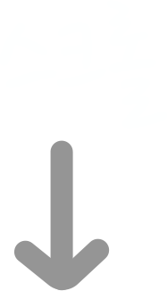

ITC영어 커리큘럼

입이 기억하는 'ITC 영어'가 한국영어교육의 문제점을
확! 바꾸었습니다.



영어를 배우는 가장 큰 이유는 영어로 말하기 위해서입니다. 먼저 영어로 말을 하도록 배웁니다. 이 과정을 통해 영어로 말을 할 수 있습니다.
수강대상: ??
수강기간: 12개월
영어의 대화는 먼저 들으면서 시작합니다. 영어로 듣고 영어로 발표합니다. 이 과정을 통해 영어로 대화할 수 있습니다.
수강대상: ??
수강기간: 4개월
영어를 할 줄 안다면, 이젠 글을 읽을 차례입니다. 글을 읽고 영어로 발표합니다. 이 과정을 통해 직독직해 할 수 있습니다.
수강대상: ??
수강기간: 8개월
영어를 활용하기 위한 첫 단계는 문법에서 시작합니다. ITC영어만의 문법 학습 방법! 말하는 문법을 통해 기초 영문법을 배우고 영어로 글쓰기를 합니다.
수강대상: ??
수강기간: 6개월
쉬운 주제는 이제 그만!
의학, 지구과학, 물리 등의 고급 지식 및 어휘를 가르치고 한 단계 상승된 토픽을 활용하도록 합니다.
수강대상: ??
수강기간: 6개월
언여활용교육의 최종 단계 입니다. 순차통역/동시통역을 하고 영어 프레젠테이션 및 영어 강의를 합니다.
수강대상: ??
수강기간: 12개월
>1일 수업으로 말을 할 수 있습니다.
>1년 수업으로 프리토킹이 가능합니다.
>2년 수업으로 직독직해가 가능합니다.
>3년 후, 프레젠테이션 순차통역이 가능합니다.
>4년 후, 수영어강의와 동시통역이 가능합니다.
수능 보카 정복, 수능 이디엄 정복, 문제 유형 익히기
연음 듣기, 고등 청취, 수능 청취
쉐도잉, 애니메이션 통역, 문자통역, 소리통역, 영상통역, 뉴스통역, 토론통역, 더빙통역
명작발표, 원고발표, 1분 스피치, 4단 논법,스피치, 입론, 반론, 최종 변론, 독서토론, 1 : 1 토론, 3 : 3 토론
{ 2학년 4학기제 }
 1일 수업으로 말을 할 수 있습니다.
1일 수업으로 말을 할 수 있습니다.
4차 산업혁명 시대에서 노예가 아닌 주인이 됩니다.
창의성, 대화, 공감능력을 키웁니다.
통역자격증으로 취직이 용이합니다.
통역대학 졸업자는 ITC본사에서 근무가 가능합니다.